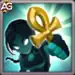
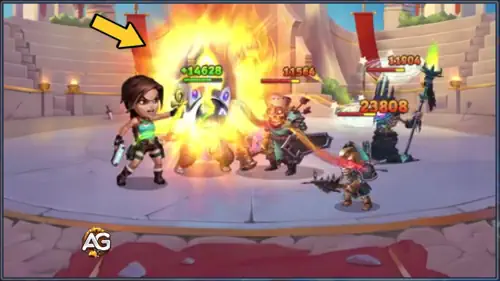
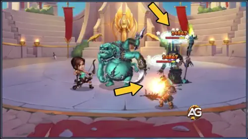
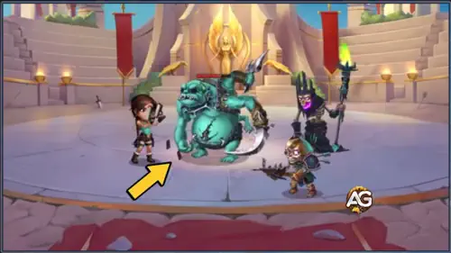

Some call her the Tomb Raider, others know her as an adventurer and archaeologist. An ancient portal transported Lara Croft to the lands of Dominion, where she is destined to uncover its long-lost secrets.
The arrival of Lara Croft as the first globally recognized character to join the Alliance Domain is more than a simple collaboration it’s a fusion of legacies. Players can now explore Hero Wars Alliance alongside one of the most iconic figures in gaming history.
This partnership also marks a milestone for Hero Wars Alliance, showing the developers’ commitment to innovation by blending the lore of Tomb Raider with the fast-paced strategy of Dominion. Get ready for a legendary adventure!
Lara Croft Guide - Hero Wars Alliance, a game developed by Nexters.
Who Is Lara Croft?
Lara Croft is a back line marksman who relies on agility and precise attacks to deal consistent damage. As part of the Progress faction, she offers tactical utility and high output, especially in long-range battles. She is only available through special events.
Class: Marksman
Position: Back Line
Main Stat: Agility
Faction: Progress
How to get Soul Stones: Only for special events
Hero Overall Tier List: S+
Hydra Tier List: A
In standard combat, Lara Croft excels at taking down enemies from a distance while staying protected behind frontline heroes. Her agility-based build allows her to evade attacks and strike precisely when it counts.
In Hydra battles, while not the absolute top-tier option, she still holds strong value thanks to her consistent DPS and synergy with other Progress heroes.
Lara Croft Pros and Cons - Hero Wars Alliance
✅ Pros
High burst physical damage thanks to strong Agility scaling and critical hits.
Excellent synergy with Armor Penetration stats from glyphs and talismans.
Versatile offensive options through skins that boost critical hit chance and physical attack.
Weapon artifact supports team-wide physical damage during ultimate activation.
⌠Cons
Vulnerable to magic damage due to low magic defense and lack of sustain.
Countered hard by Helios and Amira, who punish her reliance on critical hits.
Requires heavy investment in artifacts, glyphs, and talismans to reach full potential.
Less effective against evasion or dodge-based teams without proper team support.
Discover which Lara Croft skills to upgrade first and why turn your adventure into a true relic-hunting domination!

Power of the Tombs
This is Lara’s ultimate ability and the heart of her kit. She deals damage to all enemies and heals her allies at the same time, creating a perfect balance between offense and support. On top of that, her basic attacks start hitting twice due to the passive effect. This means her overall damage increases significantly even when she’s not using skills!
Evolution Priority:Very High – Max this first to boost both her team support and sustained damage.

Power of the Tombs Skill, Hero Wars Alliance.
Critical Thinking
This ability increases Lara’s chance of landing critical hits and boosts the damage of those hits by 300%! For 8 seconds, she becomes a high-risk, high-reward sniper. When upgraded, this skill can turn her into a deadly marksman, especially in synergy with her ultimate’s double shot passive.
Evolution Priority:High – Upgrade second to unlock her full critical damage potential.
Critical Thinking Skill, Hero Wars Alliance.
Steady Shot
Lara fires an explosive arrow that stuns enemies and deals area damage. The stun lasts 3 seconds, which is powerful for controlling enemy formations and giving your team time to strike. However, since it's situational and depends on enemy positioning, it’s not always as impactful as her other abilities.
Evolution Priority:Medium – Useful for control, but prioritize after her offensive abilities.

Steady Shot Skill, Hero Wars Alliance.
Lost Knowledge
This passive adds bonus physical attack and embeds a random artifact shard into her weapon, which activates on her ultimate use. The effect is powerful in the long run but depends heavily on her artifact level and the type of bonus received (which is random and non-repeating). It’s a great bonus, but not reliable in early or mid-game.
Evolution Priority:Low – Upgrade last, as its strength scales mostly with her artifact and less with the skill level.

Lost Knowledge Skill, Hero Wars Alliance.
Best Skin for Lara Croft Hero Wars Alliance
Discover the best skin evolution priority order for Lara Croft in Hero Wars Alliance, focusing on battle efficiency and stat bonuses.
Default Skin
Agility +1,365
Each agility point grants: 2 physical attack, 1 armor, and +1 bonus physical attack (since Agility is her main stat).
Evolution Priority:High – Boosts overall offense and defense through multiple secondary stats.
Find out which artifacts to evolve first for Lara Croft in Hero Wars Alliance based on their impact on skill performance.
1st - Weapon Artifact:
Lara's Jade Necklace
Activation chance: 100%
Physical Attack: +14,238
Activates when using the ultimate skill and boosts the entire team’s physical attack for 9 seconds.
Evolution Priority:Very High – This artifact directly enhances Lara's ultimate skill and buffs her entire team’s damage. Because it scales with skill usage and team synergy, it's the top priority for evolution.
2nd - Book Artifact:
Warrior's Code
+2,967 Critical Hit Chance
+3,561 Physical Attack
Evolution Priority:Medium – Provides a mix of critical hit chance and physical attack. While the crit boost is situational, the additional physical attack contributes consistently to skill damage, justifying a mid-level priority.
3rd - Ring Artifact:
Ring of Agility
Agility +3,990
Each agility point grants: 2 physical attack, 1 armor, and 1 extra point to physical attack if agility is the hero's main stat.
Evolution Priority:High – Agility is Lara’s main stat, so upgrading this ring boosts her overall damage and survivability. Although it scales all-around, it’s slightly behind the weapon because it doesn’t activate in battle.
Lara Croft Glyph Evolution Priority
Check out the best glyph priority for Lara Croft in Hero Wars Alliance, based on how each stat boosts her combat performance.
1st - Physical Attack Glyph:
+8,340 Physical Attack
Evolution Priority:Very High – Directly increases the damage of all Lara’s offensive skills. This is the most important glyph for maximizing her combat impact.
2nd - Armor Penetration Glyph:
+12,850 Armor Penetration
Evolution Priority:High – Allows Lara to ignore enemy defenses, making her skills more effective against high-armor heroes. Great for boosting consistent damage output.
3rd - Agility Glyph:
+2,110 Agility
Evolution Priority:High – Since Agility is Lara’s main stat, it enhances her physical attack, armor, and survivability, making it a balanced and impactful upgrade.
4th - Crit Hit Chance Glyph:
+4,170 Crit Hit Chance
Evolution Priority:Medium – Useful for burst damage builds, especially when paired with crit-based teams. However, it's less reliable than raw damage stats.
5th - Health Glyph:
+122,800 Health
Evolution Priority:Low – Provides survivability, but Lara is best used offensively. It's a good late-game option once her damage stats are maxed out.
Talisman Guide for Lara Croft Hero Wars Alliance
Talisman of Adventure
Talisman of Adventure, Hero Wars Alliance.
Main Slot – Agility +2000
Each Agility point grants:
• +2 Physical Attack
• +1 Armor
• +1 extra Physical Attack if Agility is the hero’s main stat
The talisman has three reroll slots, each of which can reach up to +6600 Armor Penetration through rerolls, totaling up to +19,800 when maxed.
Armor Penetration helps Lara Croft bypass enemy defenses and increases the damage of her physical skills, making it crucial for facing armored enemies.
Isaac boosts Lara's physical damage output by granting a team-wide physical attack buff and armor penetration to allies positioned behind him. His shield also protects the backline from physical and magical threats, giving Lara the cover she needs to deal damage safely.
Judge provides valuable support with his shield, which protects both the front and backmost allies perfect for safeguarding Lara. His area stun also works well with Lara’s crowd control skills, enhancing team disruption and control.
Julius is an ideal front-line tank for Lara. He provides a strong shield and defensive buffs, and his artifact boosts critical hit chance which directly benefits Lara's playstyle and damage output.
Polaris works exceptionally well with Lara, as both heroes have stun abilities. Lara’s control effects help set up Polaris's Aurora Borealis stun combo, making it harder for enemies to recover from crowd control chains.
Amira counters Lara Croft with her skill Fair Deal, which specifically targets Agility heroes like Lara. It turns Lara’s critical hits into critical fumbles for 9 seconds, significantly reducing her burst damage potential and making her less dangerous during that time.
Helios punishes Lara Croft's critical hits with Flaming Retribution. When Lara lands a critical hit while Solar Wind is active, Helios retaliates with a fire beam that deals magic damage. Since Lara depends heavily on critical hits to deal high damage, Helios is a strong magical counter that can punish her for being aggressive.
Best Teams for Lara Croft Hero Wars: Dominion Era
Top Defense Teams for Lara
#
Table: Best Defense Teams for Lara
Julius, Judge, Soleil, Lara, Polaris
Julius, Judge, Isaac, Lara, Polaris
Julius, Judge, Sebastian, Lara, Polaris
Julius, Judge, Isaac, Lara, Astrid
Corvus, Dante, Nebula, Lara, Octavia
Julius, Judge, Soleil, Lara, Astrid
Julius, Judge, Isaac, Lara, Folio
Top Attack Teams for Lara
#
Table: Best Attack Teams for Lara
Polaris, Lara, Folio, Judge, Julius
Lara, Isaac, Soleil, Judge, Julius
Polaris, Lara, Isaac, Judge, Julius
Lara, Isaac, Sebastian, Judge, Julius
Astrid, Lara, Isaac, Judge, Julius
Astrid, Lara, Sebastian, Judge, Julius
Octavia, Lara, Nebula, Dante, Corvus
Conclusion – Lara Croft Hero Wars Alliance
Lara Croft is a powerful agility-based damage dealer who shines when supported by heroes that boost her physical attack and protect her from crowd control and magic damage. Her critical hit potential and armor penetration make her a strong choice in both offensive and defensive setups, especially when paired with heroes like Julius, Judge, Isaac, and Polaris.
However, players must be cautious against counters like Helios and Amira, who directly exploit Lara’s reliance on critical hits. With the right investment in artifacts, glyphs, skins, and talismans, Lara becomes a deadly and fast-paced threat capable of swinging the tide of battle in your favor.
Whether you’re building her for arena, guild wars, or campaign, Lara Croft is a stylish and strategic addition to any team a true hunter ready for any mission.
Video: Lara Croft vs Meta Teams in Hero Wars Alliance
Video: Unleash the Power of Lara Croft: Hero Wars Analysis & Strategies
Did you like our Lara Croft Guide for Hero Wars Mobile? Is there something you didn't understand or would like to suggest changes to? We invite you to join our comment section on the Alexandre Games Blog page. Feel free to express your opinion, clarify your doubts, and share your suggestions. Click the button below to get started:


 Isaac Hero Wars Mobile Guide
Isaac Hero Wars Mobile Guide Nebula Hero Wars Mobile Guide
Nebula Hero Wars Mobile Guide Tristan Hero Wars Mobile Guide
Tristan Hero Wars Mobile Guide